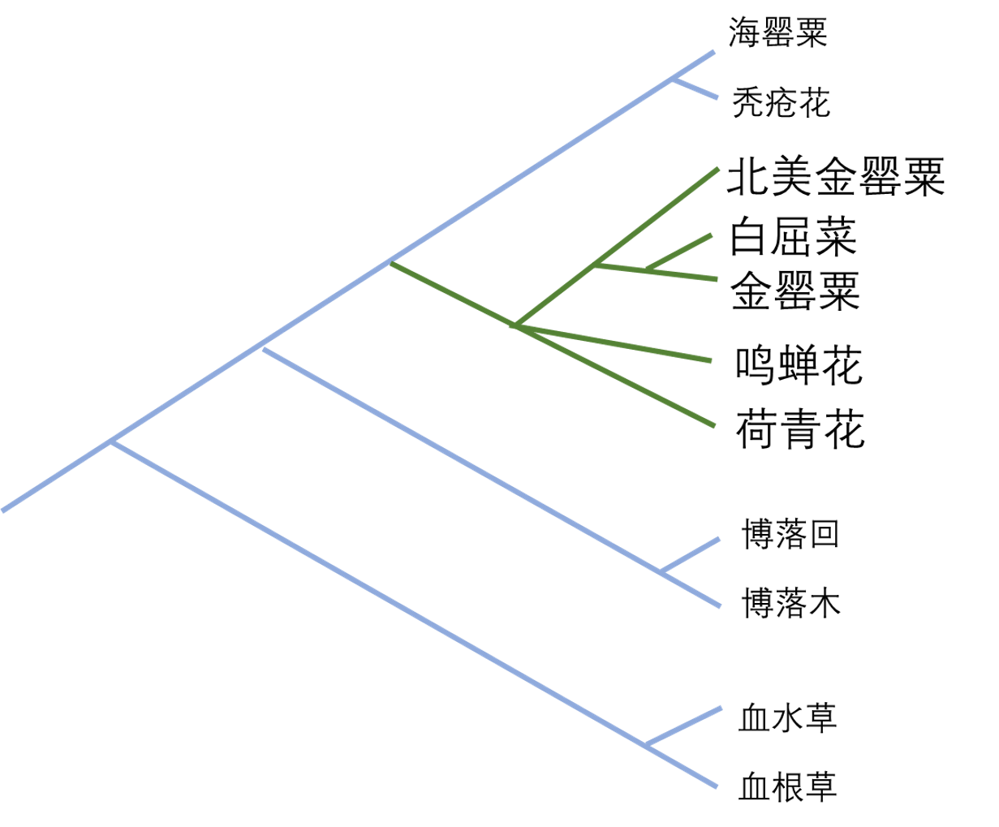

白屈菜族的系统发育：
通常认为白屈菜族（Chelidonieae）下有白屈菜属Chelidonium,金罂粟属Stylophorum，荷青花属Hylomecon，博落木属Bocconica，博落回属Macleaya，血水草属Eomecon，血根草属Sanguinaria，海罂粟属Glaucium，秃疮花属Discranostigma 共九个属。
而韩国的特有种鸣蝉花Coreanomecon hylomeconoides 的分类还存在争议。形态上其与荷青花最为接近，但过去被并入白屈菜属。同时，初步的研究结果证明，白屈菜属镶嵌在金罂粟属的内部。同时，罂粟科整体的系统发育框架也没有得到很好的解决，无法确定那个分支是罂粟科的基部类群（蕨叶草or罂粟）。同样的问题也发生在毛茛目的系统发育框架上，通常认为领春木科Eupteleaceae是毛茛目的基部类群，但证据的支持率很低。
石玄参的分类位置
石玄参属Nathaliella 发现在中亚和我国新疆，是生长在陡峭生境中的莲座状草本。过去由于形态的相似认为其与藏玄参属Oreosolen 近缘，属于玄参科Scrophulariaceae（实际上藏玄参属嵌在玄参属的内部，现已被修订）。而初步的分子系统发育的证据则证明，石玄参属与地黄属Rehmannia 和崖白菜属Triaenophora关系最近，是列当科Orobanchaceae的非寄生类群。
未来研究计划
对于有袋类及后兽亚纲的系统发育研究。
现生有袋类的多样性中心在澳大利亚，但后兽亚纲的化石证据广泛分布于北美。是哪个类群、在什么时间实现了从劳亚大陆向冈瓦纳大陆的跨越却还没有解答。同时，现生有袋类起源是在来到冈瓦纳大陆之前还是之后，南美类群和澳洲类群的分化是在冈瓦纳大陆分裂之前还是之后，也都没有明确答案。
我希望能重建现生有袋类种水平的系统发育框架，运用Total-evidence和Fossilized birth-death 手法，将化石证物种整合到系统发育树中，进而推测整个后兽亚纲的进化历史。